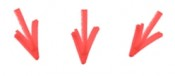

Tab Monkey Shortcuts
Welcome. I need to reload ${n} of your tabs to activate the shortcuts below.
Try these after the tabs reload...

| Action |
Shortcut (Mac) |
Shortcut (Windows / Linux / Commodore) |
| Jump to previous tab |
Cmd-B |
Ctrl-Q |
| Bookmark Tab |
Cmd-Option-1 (2,3,4...9) |
Ctrl-Alt-1 (2,3,4...9) |
| Jump to Bookmarked Tab |
Cmd-1 (2,3,4...9) |
Ctrl-1 (2,3,4...9) |
Yeah, I know that hardwired shortcuts suck, but this is version 0.2
☺
You can email me @
romy.maxwell@gmail.com